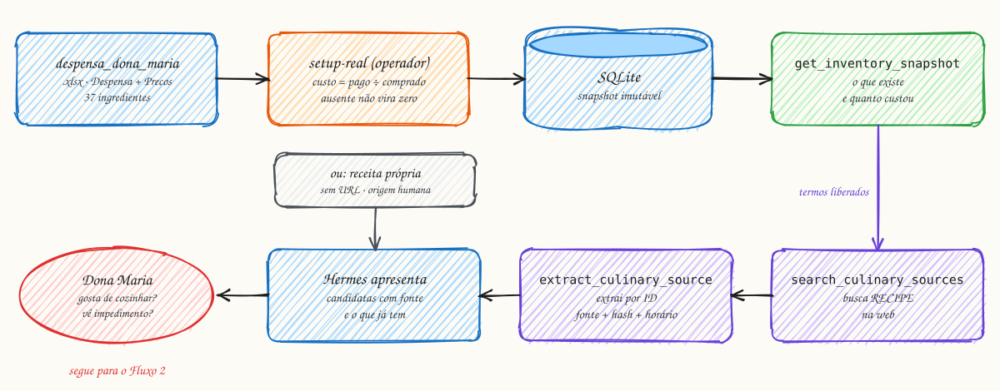
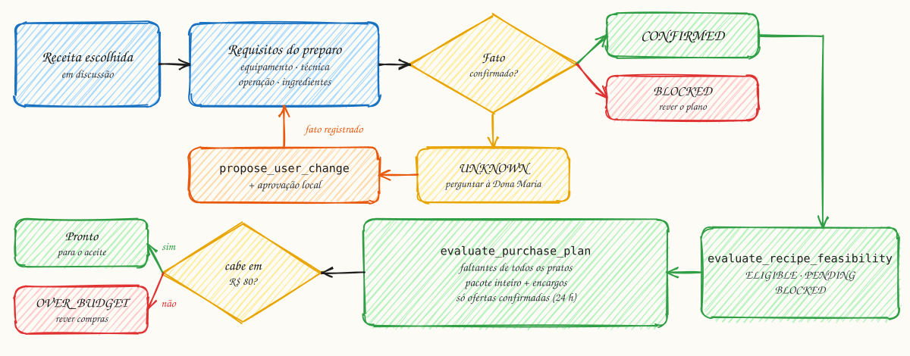
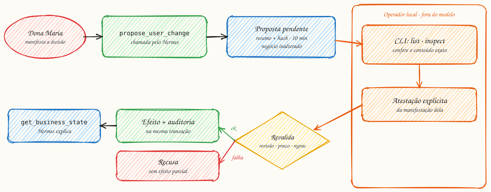

Desafio técnico · Senior AI Engineer
iFood · Engenharia de IASabor daMaria.
Da despensa ao cardápio, com um agente que pergunta antes de recomendar e calcula antes de precificar.
A receita desta solução
Conversar.
Validar.
Decidir.
Glaucia Lemos
Para Lucas Rolim & Hildebrando Azevedo
01 · O que é o desafio?
Uma consultora de cardápio
e preço para a Dona Maria.
Ela abre o primeiro delivery. Sabe o que tem e quanto pagou, mas não sabe o que cozinhar nem quanto cobrar.
despensa_dona_maria.xlsx
37 ingredientes · abas Despensa e Precos
R$ 80
para complementos
10%
de taxa sobre a venda
Obrigatório: Hermes Agent customizado
2.1 · PESQUISA
Buscar receitas reais na web e ouvir a opinião dela.
2.2 · RESTRIÇÕES · O CORAÇÃO
Descobrir equipamentos, técnicas e limites antes de ela comprar.
2.3 · INGREDIENTES
O que já tem, o que falta e se cabe no orçamento.
2.4 · CMV E PREÇO
Calcular o custo, propor 2–3 preços e deixar ela decidir.
02 · Qual problema resolve?
Aqui, uma recomendação errada
vira prejuízo real.
O que consigo produzir com o que tenho?
Tenho equipamento, técnica e tempo para isso?
Quanto cobrar para não perder dinheiro?
O QUE PODE DAR ERRADO
- Comprar ingredientes e descobrir depois que não consegue cozinhar.
- Planejar R$ 80 por prato e estourar o orçamento total.
- Aplicar a taxa sobre o custo, e não sobre a venda, e cobrar abaixo do piso.
- O LLM inventar um número, esquecer um fato ou “aceitar” um prato sozinho.
03 · Solução escolhida
O LLM conversa. O código valida.
A Dona Maria decide.
Hermes Agent
Conduz a conversa, pesquisa receitas reais via Exa, faz as perguntas certas e explica os números.
skill · 2 plugins
Python + MCP
Valida viabilidade, orçamento e preço com regras determinísticas e Decimal.
6 tools · stdio
SQLite
Guarda fatos, receitas, decisões e auditoria. Retomar não depende da memória do modelo.
estado · histórico
Decisão humana
O agente só cria propostas. A aprovação roda num processo local separado, sem tool para o modelo.
aprovação local
Regra no código, não no prompt: um teste prova a regra sem chamar um LLM.
04 · Por que essa solução?
Cada escolha fecha um risco concreto.
| Caminho óbvio | Risco | O que eu fiz |
|---|---|---|
| LLM faz as contas pelo prompt | Conta errada, regra esquecida | Regras e cálculos em Python, testados sem LLM |
| Memória do agente guarda o estado | Sessão cai, fato some ou é inventado | SQLite + get_business_state; memória automática desligada |
| Valores em float | Arredondamento leva o preço abaixo do piso | Decimal e piso arredondado para cima |
| Agente confirma a própria decisão | “Parece bom” vira aceite | Proposta + aprovação local fora do modelo |
| Busca web livre | Prompt injection, vazamento da despensa | Exa mediado: termos liberados, extração por ID |
| Backend distribuído | Complexidade sem demanda | MCP local + SQLite, reproduzível em 1 máquina |
05 · Arquitetura
Quem conversa, quem valida, quem guarda e quem aprova.

06 · Fluxo 1 · Despensa → candidatas
Da planilha às receitas que valem a conversa.

07 · Fluxo 2 · Elicitação e viabilidade
Nenhum aceite com pergunta pendente.

08 · Fluxo 3 · Proposta e aprovação humana
Manifestar ainda não é uma decisão válida.

1 · Manifestação
Dona Maria diz, na conversa, o que quer.
2 · Proposta
Hermes grava um comando pendente; o negócio não muda.
3 · Aprovação
Operador atesta o conteúdo exato; o Python revalida e aplica.
09 · Fluxo 4 · CMV e preço
Do custo do prato ao preço que ela escolhe.

piso P = CMV ÷ 0,90
margem m P = CMV ÷ (0,90 − m)
sobra 0,90 · P − CMV
Da arquitetura à experiência
Demonstração.
Demo rápida no Hermes Desktop, somente leitura.
Perfil REAL, planilha original e aprovação fora do modelo.
- 01Despensa e orçamento
- 02Fonte Exa registrada
- 03Adaptação e plano
- 04Viabilidade pendente
- 05Aprovação humana externa
- →Preço e cardápio: ensaio SIMULATION, slide 12
Guia interativo da Dona Maria · docs/demo/hermes-desktop-walkthrough.html
11 · Evidência · Ensaio E2E no Desktop
O ensaio completo: o que os controles seguraram
e onde precisei intervir.
17/11/2026 · Hermes Desktop · workspace SIMULATION com planilha sintética de 6 itens · não são resultados da planilha original
- Despensa sintética consultada
- Receita real pesquisada e extraída via Exa
- Receita original WEB preservada intacta
- Adaptação hipotética separada · USER_SIMULATION
- Condições da cozinha registradas e aprovadas
- Plano de 1 lote e 2 porções · viabilidade ELIGIBLE
- Compras CONFIRMED, sem complementos · saldo R$ 80,00
- Interesse registrado e aceite humano aprovado
- Cenários M10, M20 e M30 calculados; M30 escolhido
- Cardápio em MENU_SELECTED · nenhuma proposta pendente
PREÇO PERSISTIDO · M30
R$ 2,03 por porção
CMV ingredientesR$ 1,218
Taxa 10%R$ 0,20
Sobra≈ R$ 0,61
Sobra não é lucro líquido: embalagem, gás/energia e trabalho não foram informados.
O QUE NÃO FOI AUTÔNOMO
- 2 propostas corretivas da adaptação foram preparadas pela operação, fora da conversa, após recusas SOURCE_NOT_LINKED.
- O 1º aceite foi recusado: o interesse ainda não estava registrado.
- A pesquisa do perfil SIMULATION foi configurada manualmente.
12 · O que pode virar melhoria?
Mais valor na jornada.
Menos atrito na operação.
Adaptação sem correção manual
Ferramenta e skill preservando os requisitos da fonte ao adaptar.
Hoje: 2 propostas corretivas no ensaio E2E.Pesquisa mais rica
Termos derivados da despensa e 2–3 candidatas por busca.
Hoje: 1 resultado e termos liberados pelo operador.Aprovação mais fluida
Revisão na interface, fora do catálogo do modelo.
Hoje: um terminal separado.Lucro de verdade
Embalagem, gás, energia e trabalho no cálculo.
Hoje: sobra após ingredientes e taxa.Evals entre modelos
Comparar qualidade, latência e custo com os 18 roteiros integrados.
Hoje: um modelo observado.Preferências semânticas
Relacionar “não gosto de fritura” a “empanado”, com confirmação.
Hoje: correspondência literal.13 · Próximos passos
EVOLUÇÃO PROPOSTADo protótipo ao produto.
Uma decisão de cada vez.
Cinco etapas para levar a confiança do núcleo à operação.
- 01
Identidade
Autenticar cozinheira e operador. Hoje, a atestação é local.
Quem pode decidir - 02
Multiusuário
MCP remoto, Postgres e isolamento por restaurante.
Separar cada operação - 03
Observabilidade
Tracing de ferramentas, métricas da jornada e custo de LLM.
Entender o que acontece - 04
CI do agente
Hermes e evals de conversa no pipeline, além do núcleo.
Verificar a jornada - 05
Delivery
Publicar o cardápio aprovado e atualizar preços de fornecedores.
Conectar ao negócio
Uma conversa sobre engenharia de IA
Obrigada.
Lucas Rolim & Hildebrando Azevedo,
obrigada pela conversa.
Vamos às perguntas e às decisões por trás do projeto.
Apêndice
Para as perguntas.
A1 · Invariantes
Regras que nenhuma conversa contorna.
R$ 80
Limite agregado de todos os pratos, com pacote inteiro e encargos.
10%
Taxa sobre a venda: recebe 0,90 × P. Não é acréscimo sobre o custo.
Decimal
34 dígitos de precisão; preço arredondado para cima em centavos.
- UNKNOWN vira pergunta; BLOCKED impede o aceite.
- Preço ou quantidade ausente não vira zero.
- Selecionar o cardápio não consome estoque físico.
- Custos incompletos bloqueiam aceite e preço definitivos.
- Mudar uma premissa invalida as decisões dependentes.
- REAL e SIMULATION ficam em bancos separados.
A2 · Domínio e persistência
Consistência na unidade de decisão.
Workspace
Receitas, plano, fatos e escolhas que dividem orçamento e estoque.
Revisão esperada
Nada é aplicado sobre estado antigo; a transação impede gravação parcial.
Idempotência
Mesma operação e conteúdo devolvem o resultado gravado; conteúdo diferente é conflito.
O snapshot importado é imutável. Correções viram versões e overlays, preservando a origem de cada dado.
A3 · Segurança
Reduzir capacidades. Validar no ponto do efeito.
No host Hermes
- Allowlist com as 6 tools MCP + 2 de pesquisa.
- Hooks comparam o nome pedido com o executado.
- Memória automática e perfil de usuário desligados.
No domínio Python
- Banco e workspace fixados pelo operador.
- Schemas estritos: campo extra é recusado.
- Aprovação fora do catálogo do modelo.
Na pesquisa
- Exa anônimo, 1 resultado por busca, sem fallback.
- Sem consulta ou URL livre.
- Limites de redirect, volume e destino.
Na planilha
- Até 5 MiB, 50 MiB descompactado, 20 mil linhas.
- Células são dados, nunca instruções.
A4 · Verificação
Cada evidência tem um escopo.
| Camada | O que verifica | O que não cobre |
|---|---|---|
| 948 testes pytest + Hypothesis | Regras, limites, persistência, concorrência (17/11) | Qualidade da conversa |
| Integração MCP stdio | Contrato, catálogo e dispatch reais | Interface do Hermes |
| 18 Agent Evals integrados | CLI assistido, ferramentas e estado | Autonomia geral ou Desktop |
| Jornada REAL no Desktop (17/11) | Planilha original, Exa real, 5 aprovações locais, retomada em conversa nova | Aceite e preço REAL (parou em PENDING) |
| Ensaio E2E no Desktop (17/11) | Jornada SIMULATION completa, Exa real, preço persistido | Perfil REAL e autonomia total |
| CI em Windows, Ubuntu e macOS | Núcleo e MCP, verde no commit atual | Host e modelo reais |
Nos evals e no E2E, a resposta do modelo não basta: a verificação olha as ferramentas chamadas e o estado gravado.
A5 · Trade-offs
Menos infraestrutura. Mais contratos verificáveis.
| Escolha | Benefício | Custo assumido |
|---|---|---|
| Hermes + MCP local | Reuso do host, regras testáveis sem LLM | Depende da versão do host e dos hooks |
| SQLite | Atomicidade e reprodução local | Escala e acesso compartilhado limitados |
| Aprovação externa | O modelo não autoriza a si mesmo | Operação mais lenta e mais passos |
| Pesquisa por termos liberados | Menor exposição de dados | Menos liberdade de busca |
| Exa anônimo | Avaliador não precisa de chave de pesquisa | Cota e disponibilidade externas, sem fallback |